항공산업기사 (2005-09-04 기출문제)
1과목: 항공역학
1. 이륙 활주 거리를 짧게 하기 위해서는 다음 어느 조건이 만족 되어야 하는가?
- 익면 하중이 크고 양력계수도 클 것
- 익면하중이 크고 지면 마찰계수가 작을 것
- 익면 하중이 작고 지면 마찰계수가 클 것
- 익면 하중이 작고 양력 계수가 클 것
(정답률: 63%)

2. 다음 중 항력 버킷을 가장 올바르게 설명 한 것은?
- 양 항력 곡선에서 어떤 양력 계수 부근에서 항력 계수가 갑자기 작아지는 부분
- 양 항력 곡선에서 어떤 항력 계수 부근에서 항력 계수가 갑자기 작아지는 부분
- 양 항력 곡선에서 어떤 항력 계수 부근에서 양력 계수가 갑자기 작아지는 부분
- 양 항력 곡선에서 어떤 양력 계수 부근에서 양력 계수가 갑자기 커지는 부분
(정답률: 47%)
3. 비행기의 안정과 조종, 그리고 운동의 문제를 다루는데 있어서, 기준이 되는 좌표축(기준축; body axis)은 비행기의 어느 것을 원점으로 하는가?
- 공기력 중심
- 공기 역학적 중심
- 무게 중심
- 기하학적 중심
(정답률: 63%)
4. 항공기의 세로 안정성(static longitudinal stability)에 대한 설명으로 가장 거리가 먼 내용은?
- 무게 중심의치가 공기 역학적 중심보다 전방에 위치할수록 안정성이 좋아진다.
- 날개가 무게 중심위치 보다 높은 위치에 있을 때 안정성이 좋다.
- 꼬리날개 면적을 크게 하면 안정성이 좋다.
- 꼬리날개효율을 작게 할수록 안정성이 좋다.
(정답률: 83%)
5. 뒤 젖힘각을 가장 올바르게 설명한 것은?
- 25%C(코드길이)되는 점들을 날개 뿌리에서 날개 끝까지 연결한 직선과 기체의 가로축이 이루는 각
- 날개가 수평을 기준으로 위로 올라간 각도
- 기체의 세로축과 날개의 시위선이 이루는 각
- 날개 끝의 붙임각을 날개뿌리의 붙임각보다 크거나 작게 한 것
(정답률: 79%)
6. 헬리콥터에서 유도 속도를 가장 올바르게 표현한 것은?
- 하버링 중의 로우터 회전면의 하류의 풍압이다.
- 로우터 회전면의 하류의 공기의 풍압이다.
- 로우터 회전면의 하류의 공기의 속도이다.
- 로우터 회전면의 상류의 공기의 흐름이다.
(정답률: 63%)
7. 프로펠러에서 깃뿌리에서 깃 끝으로 위치 변화에 따른 기하학적 피치 변화는?
- 감소하도록 설계한다.
- 일정하도록 설계한다.
- 증가하도록 설계한다.
- 중간 지점이 최대가 되게 설계한다.
(정답률: 37%)
8. 비행속도 360[km/h], 공기밀도1/8[㎏ㆍsec2/m2]인 경우 동압은?
- 45 [㎏/m2]
- 25 [㎏/m2]
- 625 [㎏/m2]
- 725 [㎏/m2]
(정답률: 73%)
9. 하강비행 중 기수를 올리려 할 때 받음각과 각속도가 특정 값을 넘게 되면 예상한 정도 이상의 기수가 올라가는 현상을 무엇이라 하는가?
- 턱 업(tuck up)
- 피치 업(pitch up)
- 딮 실속(deep stall)
- 기수 업(nose up)
(정답률: 79%)
10. 비행기가 옆 미끄럼 상태에 들어갔을 때의 설명으로 가장 올바른 것은?
- 수직 꼬리날개의 받음각에는 변화가 없다.
- 비행기의 기수를 상대풍과 반대방향으로 이동시키려는 힘이 발생한다.
- 수평 꼬리날개에 옆 미끄럼 힘(side force)이 발생된다.
- 무게중심에 대한 빗 놀이 모멘트가 발생된다.
(정답률: 47%)
11. 4자 계열 날개골의 특징이 아닌 것은?
- 두께가 15~18%정도 까지는 두꺼울수록 앞전 반지름도 커지므로 실속각과 최대 양력 계수가 커진다.
- 두께다 15~18%이상에서는 큰 받음각일 때 최대 양력 계수값이 떨어진다.
- 캠버의 실용 범위는 4%정도이다.
- 항력은 두께가 얇고 캠버가 적을수록 작은 받음각에서 작다
(정답률: 47%)
12. 비행기의 세로축(longitudinal axis)을 중심으로 한 운동(rolling)에 가장 관계가 깊은 조종면은?
- 도움 날개(aileron)
- 승강키(elevator)
- 방향키(rudder)
- 플랩(flap)
(정답률: 84%)
13. 다음은 열원에 관한 내용이다. 가장 관계가 먼 내용은?
- 열권은 중간권 위에 있다.
- 열권에서는 분자, 원자가 충돌할 수 있는 기회가 아주 적어 각원자, 분자는 지상에서 발사된 탄환과 같은 궤적을 그리며 운동하고 있다.
- 위도가 높은 지방의 하늘에서 극광이나 유성이 길게 밝은 빛의 꼬리를 남기는 것은 주로 열권에서 일어난다.
- 전리층이 있다.
(정답률: 71%)
14. 항공기 중량 5000kg, 날개 면적 30m2, 실속 속도 100m/sec에서 양력계수를 구하면? (단, p=1/8 ㎏ㆍsec2 / m4)
- 0.2
- 0.27
- 0.3
- 0.42
(정답률: 67%)
15. 프로펠러의 슬립(slip)이란?
- 유효피치에서 기하학적피치를 뺀 값을 평균 기하학적 피치의 백분율로 표시
- 기하학적피치에서 유효피치를 뺀 값을 평균 기하학적 피치의 백분율로 표시
- 유효피치에서 기하학적피치를 나눈 값을 백분율로 표시
- 유효피치와 기하학적피치를 합한 값을 백분율로 표시
(정답률: 67%)
16. 항공기 날개에 상반각을 주게 되면 다음과 같은 특성을 갖게 한다. 가장 올바른 내용은?(오류 신고가 접수된 문제입니다. 반드시 정답과 해설을 확인하시기 바랍니다.)
- 유도저항을 적게하고 방향 안정성을 좋게 한다.
- 옆 미끄럼을 방지하고 세로 안정성을 좋게 한다.
- 익단 실속을 방지하고 세로 안정성을 좋게 한다.
- 선회성능을 향상시키나 가로 안정성을 해친다.
(정답률: 70%)
17. 프로펠러의 진행비(advance ratio)를 올바르게 나타낸 것은? (단, V : 속도, n : 프로펠러 회전속도, D : 프로펠러지름)
- J=V/nD
- J=nD/v
- J=n/VD
- J=D/Vn
(정답률: 81%)
18. 이륙 중량이 1500kg, 엔진 출력이 200HP인 비행기가 5000m 고도를 출력 50%로 360km/h로 순항하고 있다 양향비를 구하면?
- 5
- 10
- 15
- 20
(정답률: 28%)
19. 헬리콥터에서 기하학적 불균형을 제거할 수 있도록 하기 위해 부착된 것은?
- 피치 암
- 페더링 힌지
- 플래핑 힌지
- 리드-래그 힌지
(정답률: 45%)
20. 항공비행의 한 종류인 급강하 비행시 비행기에 작용하는 힘을 나타낸 식으로 가장 올바른 것은? (단, L=양력, D=항력, W=항공기의 무게)
- L=D
- D=W
- D+W=0
- D=0
(정답률: 74%)
2과목: 항공기관
21. 배기밸브(exhaust valve)의 냉각을 위해 밸브 속에 넣어 사용하는 물질은?
- 금속 나트륨(sodium)
- 스텔라이트(stellite)
- 아닐린(aniline)
- 취화물(bromide)
(정답률: 86%)
22. 중량당 마력비가 가장 큰 기관의 실린더 배열 형식은?
- 직렬형
- 대향형
- 성형
- V형
(정답률: 72%)
23. 증기 폐쇄(vapor lock)현상이란?
- 액체 연료가 기화기에 이르기 전에 기화되어 기화기에 이르는 통로를 폐쇄하는 현상
- 기화기에서 분사된 혼합가스가 거품을 형성하여 실린더의 연료 유입을 폐쇄하는 현상
- 혼합가스가 아주 희박해 지므로서 실린더로의 연료 유입이 폐쇄되는 현상
- 기화기의 이상으로 액체연료와 공기가 혼합되지 않는 현상
(정답률: 66%)
24. 부자식 기화기(float-type carburetor)에 있는 이코노마이저 밸브(economizer valve)의 주 목적은 무엇인가?
- 최대 출력에서 농후한 혼합비가 되게 한다.
- 유로 계통에 분출되는 연료의 양을 경제적으로 한다.
- 순항시 최적의 출력을 얻기 위하여 가장 희박한 혼합비를 유지한다.
- 엔진의 갑작스런 가속을 위하여 추가적인 연료를 공급한다.
(정답률: 66%)
25. 브레이드 내부에 작은 공기 통로를 설치하여 브레이드 앞전을 향하여 공기를 충돌시켜 냉각하는 방법은?
- Transpiration Cooling
- Convection Cooling
- lmpingement Cooling
- Film Cooling
(정답률: 58%)
26. 충동 터빈(impulse turbine)의 반동도는 얼마인가?
- 0
- 1
- 2
- 3
(정답률: 61%)
27. 프로펠러 깃각(blade angle)을 증가시키는 데 가장 기여하는 힘은 무엇인가?
- 원심(centrifugal) 비틀림 힘
- 공력(aerodynamic) 비틀림 힘
- 추력(thrust) 굽힘 힘
- 토크(torque) 굽힘 힘
(정답률: 37%)
28. 속도 720km/h로 비행하는 항공기에 장착된 터보제트 기관이 300kgf/sec로 공기를 흡입하여 400m/sec로 배기 시킨다. 이때 진추력을 구하면? (단, 중력 가속도 g = 10m/sec2)
- 3000kg
- 6000kg
- 9000kg
- 12000kg
(정답률: 68%)
29. 제트기관에서 압축기의 실속은 어느 때 일어나는가?
- 항공기 속도가 압축기 회전속도에 비해 너무 클 때
- 항공기 속도가 압축기 회전속도에 비해 너무 작을 때
- 항공기 추력이 압축기 압력보다 너무 클 때
- 항공기 추력이 압축기 압력보다 작을 때
(정답률: 68%)
30. 복식연료노즐에 대한 설명 내용으로 가장 올바른 것은?
- 리버스 인젝션을 한다.
- 연료에 회전 에너지를 주면서 분사하는 것이다.
- 공기 흐름량과 압력에 따라 분사각을 변화시킨다.
- 낮은 흐름량일 때와 높은 흐름량일 때의 2단계의 분사를 한다.
(정답률: 65%)
31. 공기의 정압비열(Cp)이 0.24이다. 이때 정적 비열(Cv)의 값은 몇인가? (단, 비열비는 1.4)
- 0.17
- 0.34
- 0.53
- 5.83
(정답률: 46%)
32. 정기점검 중인 왕복엔진에서 반짝거리는 작은 금속편이 여과기(filter)에서는 발견되고 마그네틱 드레인 플러그(magnetic drain plug)에서는 발견되지 않았다면 어떻게 조치하여야 하는가?
- 보기의 기어(gear)가 마모된 것으로 장탈하거나 오버홀이 필요하다.
- 평형(plain) 베어링이 비정상적으로 마모되어 발생된 것으로 점검해 볼 필요가 있다.
- 실린더 벽이나 링이 마모된 것으로 엔진을 장탈하여야 한다
- 평형(plain)베어링 또는 알루미늄 피스톤의 정상적인 마모이므로 문제가 되지 않는다.
(정답률: 55%)
33. 압력강하가 가장 적은 연소실의 형식은?
- 앤뉼라형 (annular type)
- 캔뉼라형 (canular type)
- 캔형 (can type)
- 역류캔형 (counter flow can type)
(정답률: 71%)
34. 실린더 헤드의 안쪽에 있는 연소실의 모양 중 가장 연소가 잘 이루어지는 형은?
- 원통형
- 반구형
- 원뿔형
- 오목형
(정답률: 68%)
35. 그림은 가스 사이클의 지압 선도이다. 어떤 가스 사이클을 나타낸 것인가?
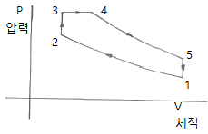
- 오토 사이클
- 카르노 사이클
- 디젤 사이클
- 사바테 사이클
(정답률: 55%)
36. 마그네토에서 접점의 간격이 커지면 어떤 현상을 초래하겠는가?
- 점화가 늦게 되고 강도가 높아진다.
- 점화가 일찍 발생하고 강도가 약해진다.
- 점화가 늦게 되고 강도가 약해진다.
- 점화가 일찍 발생하고 강도가 높아진다.
(정답률: 63%)
37. 제트엔진에서 TCCS를 가장 올바르게 설명한 것은?
- 엔진의 추력을 자동적으로 제어해주는 계통을 말한다.
- 터빈 블레이드와 터빈 케이스 사이의 간극을 최소가 되게 해주는 계통이다.
- 주로 중ㆍ소형의 터보팬 엔진에 많이 사용한다.
- TCCS는 Thrust Case Cooling System이 약자이다.
(정답률: 60%)
38. 프로펠러 깃 트랙킹은 무엇을 결정하는 절차인가?
- 항공기 세로축에 대해서 프로펠러의 회전면을 결정하는 절차
- 진동을 방지하기 위하여 각 깃 받음각을 동일하게 결정하는 절차
- 각 깃각을 특정한 범위내에 들어오게 하는 절차
- 각 프로펠러 깃의 회전 선단 위치가 동일한지 여부를 결정하는 절차
(정답률: 61%)
39. 지시마력에서 마찰마력을 뺀 값을 무엇이라 하는가?
- 제동마력
- 일 마력
- 유효마력
- 손실마력
(정답률: 72%)
40. 열역학 제 1 법칙에 대한 내용으로 가장 올바른 것은?
- 밀폐계가 사이클을 이룰 때의 열 전달량은 이루어진 일보다 항상 많다.
- 밀폐계가 사이클을 이룰 때의 열 전달량은 이루어진 일과 정비례 관계를 가진다.
- 밀폐계가 사이클을 이룰 때의 열 전달량은 이루어진 일과 반비례 관계를 가진다.
- 밀폐계가 사이클을 이룰 때의 열 전달량은 이루어진 일보다 항상 작다.
(정답률: 82%)
3과목: 항공기체
41. 그림에서와 같이 길이 2m인 외팔보에 2개의 집중하중 300kg, 100kg이 작용할 때 고정단에 생기는 최대 굽힘 모멘트의 크기는 얼마 인가?
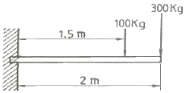
- 400kg-m
- 650kg-m
- 750kg-m
- 800kg-m
(정답률: 71%)
42. 두께 t = 0.01in 인판의 전단흐름 q = 30 lb/in 이다. 전단응력은 얼마인가?
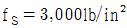
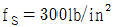
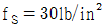
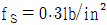
(정답률: 57%)
43. 접개 들이 랜딩기어를 비상으로 내리는 세가지방법이 아닌 것은?
- 핸들을 이용하여 기어의 업 락크를 풀었을 때 자중에 의하여 내려와 기계적으로 락크 된다.
- 핸드펌프로 유압을 만들어 내린다.
- 축압기에 저장된 공기압을 이용하여 내린다.
- 기어핸들 밑에 있는 비상 스위치를 눌러서 기어를 내린다.
(정답률: 67%)
44. 항공기 동체구조 점검 중에 알루미늄 합금의 구조물이 층층이 떨어지는 것을 발견 하였다. 일반적으로 이와 같은 부식을 무엇이라 부르는가?
- 이질금속간의 부식
- 응력부식
- 마찰부식
- 엑스폴리에이션
(정답률: 56%)
45. 한쪽의 길이를 짧게 하기 위해 주름지게 하는 판금가공 방법은?
- 수축가공
- 신장가공
- 범핑
- 크림핑
(정답률: 72%)
46. 모재의 용접에 쓰이는 joint의 형식이 아닌 것은?
- Butt joint
- Tee joint
- Double joint
- Lap joint
(정답률: 73%)
47. 항공기의 리깅 체크는 제작사의 지시를 따라야 하지만 일반적으로 구조적 일치 상태점검에 포함되지 않는 것은?
- 날개 상반각
- 날개 취부각
- 수평안정판 상반각
- 수직안정판 상반각
(정답률: 64%)
48. 다음 중 열가소성 수지는?
- 폴리에틸렌수지
- 페놀수지
- 에폭시수지
- 폴리우레탄수지
(정답률: 60%)
49. AA알루미늄 규격 2024로 만들어진 리벳트는 사용하기 전에 열처리 되어야 하는 가장 큰 이유는 무엇인가?
- 경화시켜 강도를 증가하기 위해
- 경화속도를 빨리하기 위해
- 내부응력을 제거하기 위해
- 리벳팅이 쉽도록 연화시키키 위해
(정답률: 52%)
50. AA알루미늄 규격 2024로 만들어진 리벳트는 사용하기 전에 열처리 되어야 하는 가장 큰 이유는 무엇인가?
- 경화시켜 강도를 증가하기 위해
- 경화속도를 빨리하기 위해
- 내부응력을 제거하기 위해
- 리벳팅이 쉽도록 연화시키키 위해
(정답률: 62%)
51. 모노코크 구조에 있어서 항공 역학적 힘의 대부분을 담당하는 부재는?
- 포머
- 응력표피
- 벌크헤드
- 스트링거
(정답률: 80%)
52. 항공기의 착륙활주 중 브레이크를 밟았을 때 바퀴가 한쪽면만 닳지 않게 하면서 브레이크의 효율을 높이는 장치는 무엇인가?
- 안티스키드장치
- 올레오식장치
- 시미댐퍼
- 드릅센터장치
(정답률: 71%)
53. 클레비스 볼트에 대한 설명으로 가장 올바른 것은?
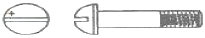
- 전단하중이 걸리는 곳에 사용한다.
- 인장하중이 걸리는 곳에 사용한다.
- 볼트는 머리는 6각 또는 12각으로 되어 있어 렌치를 이용하여 장착한다.
- 압축하중과 인장하중이 걸리는 곳에 사용한다.
(정답률: 75%)
54. 알루미늄 합금은 비행기의 재료로서는 구조용 강철보다 훨씬 좋지만 초고속기의 재료로서는 다음의 어떤 결함 때문에 티타늄 합금보다 못하는가?
- 밀도가 크다.
- 가공이 어렵다.
- 부식이 심하다.
- 고온에서 인장강도가 크지 않다.
(정답률: 80%)
55. 다음은 흔히 사용하는 너트와 이것의 부호이다. 각 부호를 가장 올바르게 설명한 것은?
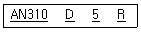
- AN310은 화이버 락킹 너트를 나타낸다.
- “D"는 마그네슘 합금을 나타낸다.
- “5”는 직경으로 5/16인치를 나타낸다.
- “R"오른 나사선으로 나사산이 인치당 38개 있다.
(정답률: 72%)
56. 그림의 항공기의 무게중심 위치를 구하면?
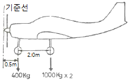
- 기준선으로부터 후방 0.72m
- 기준선으로부터 후방 1.50m
- 기준선으로부터 후방 2.17m
- 기준선으로부터 후방 3.52m
(정답률: 63%)
57. 페일세이프 구조 형식에 속하지 않는 것은?
- 다경로 하중 구조
- 샌드위치 구조
- 이중구조
- 대치구조
(정답률: 84%)
58. 리벳트 보호피막처리에서 황색으로 된 것은?
- 양극처리 한 것이다.
- 크롬화 아연을 처리한 것이다.
- 금속 분무한 것이다.
- 보호피막 처리를 하지 않은 것이다.
(정답률: 65%)
59. 이상적인 트러스 구조의 부재는 어느 하중을 받는가?
- 인장 또는 압축
- 굽힘
- 전단
- 인장 또는 굽힘
(정답률: 55%)
60. 평행선을 이용한 전개도법은 어떠한 물체에 적용되는가?
- 원뿔, 각뿔
- 원기둥, 각기둥
- 깔때기, 원기둥
- 육각뿔, 사각뿔
(정답률: 56%)
4과목: 항공장비
61. 항공계기의 특징과 조건을 설명한 내용 중 가장 거리가 먼 것은?
- 무게 : 적절한 중량이 있어야 한다.
- 습도 : 방습처리를 한다.
- 마찰 : 베어링에는 보석을 사용한다.
- 진동 : 방진장치를 설치한다.
(정답률: 53%)
62. 비행장에 설치된 콤파스 로즈(compassrose)의 주 용도는?
- 활주로의 방향을 표시하는 방위도
- 그 지역의 편각을 알려주기 위한 기준방향
- 그 지역의 지자기의 세기를 알려준다.
- 기내에 설치된 자기 콤파스의 자차수정
(정답률: 69%)
63. 정상유압 동력계통에 고장이 생겼을 때 비상계통을 사용할 수 있도록 해주는 밸브는?
- 선택 밸브
- 체크 밸브
- 시퀀스 밸브
- 셔틀 밸브
(정답률: 60%)
64. 500MHz 고주파 전압의 파형을 측정할 수 있는 것은?
- MULTIMETER
- WHEATSTONE BRIDGE
- OSCILOSCOPE
- GALVANOMETER
(정답률: 51%)
65. 항공기에 사용하는 도선의 지름에 대한 가장 편리한 단위는?
- 센티미터 (cm)
- 미터 (m)
- 센티 밀 (C mil)
- 밀 (mil)
(정답률: 48%)
66. 9[A]의 전류가 흐르고 있는 4[Ω]저항의 양끝 사이의 전압은 얼마인가?
- 24V
- 28V
- 32V
- 36V
(정답률: 78%)
67. 그림과 같은 회로에서 5[Ω]에 흐르는 전류 I2를 구하면?
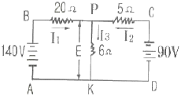
- 4A
- 6A
- 8A
- 10A
(정답률: 67%)
68. 교류 전동기에 대한 설명 중 가장 관계가 먼 것은?
- 자장발생, 전기자 유도에 의한 회전력의 발생은 직류 전동기와 다르다.
- 교류 전동기는 자장의 방향과 크기가 시간에 따라 변한다.
- 교류 전동기는 직류전동기보다 효율이 크다.
- 무게에 비해 많은 동력을 얻을 수 있다.
(정답률: 35%)
69. Pitot 정압계통에 대한 설명으로 가장 올바른 것은?
- Pitot Line의 누설 시험은 부압을 이용한다.
- 승강계는 Pitot압을 사용한다.
- 대기 속도계는 Pitot 압과 정압을 사용한다.
- 정압 라인의 누설 시험은 압력을 가한다.
(정답률: 52%)
70. 작동 유압 계통에서 계기는 어느 압력을 지시하는가?
- Reservoir Pressure
- Pressure Manifold Pressure
- Accumulator Pressure
- Pressure Regulator Pressure
(정답률: 39%)
71. 항공기의 수직 방향 속도를 분당 feet로 지시하는 계기는?
- VSI
- LRRA
- DME
- HSI
(정답률: 73%)
72. 고도계(Altimeter)의 밀폐식 공함은 어느 것 인가?
- Diaphragm
- Aneroid
- Bellow
- Bourdon Tube
(정답률: 66%)
73. 서로 떨어진 두개의 송신소로부터 동기신호를 수신하여 두 송신소에서 오는 신호의 시간차를 측정하여 자기 위치를 결정하여 항행하는 무선 항법은?
- LORAN (Long Range Navigation)
- TACAN (Tactical Air Navigation)
- VOR ( VHF Omni Range)
- ADF ( Automatic Direction Finder)
(정답률: 58%)
74. MIL - H - 8794는 길이방향으로 노랑색 선이 그어져 있다. 노랑색 선이 의미 하는 것은?
- 호스의 압력 한계를 표시한다.
- 호스가 꼬이지 않고 장착되었는지를 확인 할 수 있게 한다.
- 호스가 윤활 계통에 한하여 사용 할 수 있다는 것을 의미한다.
- 호스가 합성고무로 제작되었음을 의미한다.
(정답률: 57%)
75. 그라울러(growler)는?
- 회전자(amature) 시험용
- 코뮤레이터(commutator) 시험용
- 브러시 시험용
- 고정자코일(field coil) 시험용
(정답률: 58%)
76. 다음 중에서 지표파가 가장 잘 전파되는 전파는?
- LF
- UHF
- HF
- VHF
(정답률: 57%)
77. 다음 그림은 자이로의 섭동성을 나타낸 것이다. 자이로가 굵은 화살표의 방향으로 회전하고 있을 때, F의 힘을 가하면 실제로 힘을 받는 부분은?
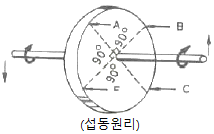
- F
- A
- B
- C
(정답률: 77%)
78. 객실여압 계통에서 대기압이 객실안의 기압보다 높은 경우에 사용하는 장치로 가장 올바른 것은?
- 객실 하강율 조정기
- 부압 릴리프 밸브
- 슈퍼차져 오버스피트 밸브
- 압축비 한계 스위치
(정답률: 74%)
79. Air - Cycle Air Conditionning System에서 Expansion Turbine에 대한 설명으로 가장 올바른 것은?
- 1차 열 교환기를 거친 Air를 냉각시킨다.
- 공기공급 라인이 파열되면 계통의 압력 손실을 막는다.
- 공기-Condition 계통에서 가장 마지막으로 냉각이 일어난다.
- 찬 공기와 뜨거운 공기가 섞이도록 한다.
(정답률: 48%)
80. 연기 감지기 (Smoke Detetor)에서 공기내의 빛의 투과양을 측정 하는데 사용되는 것은?
- 일렉트로 메카니켈장치
- 포토 - 셀
- 젖빛 유리
- 전자적인 측정장비
(정답률: 66%)